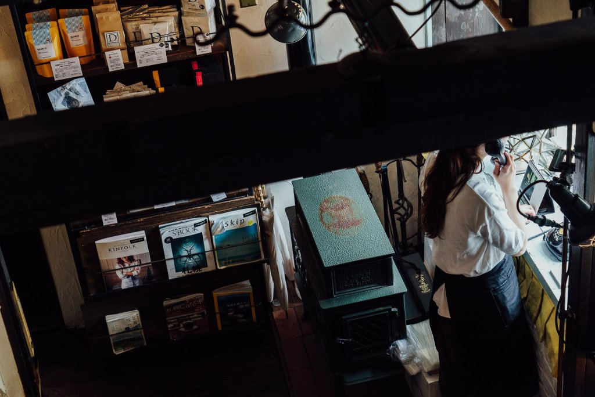
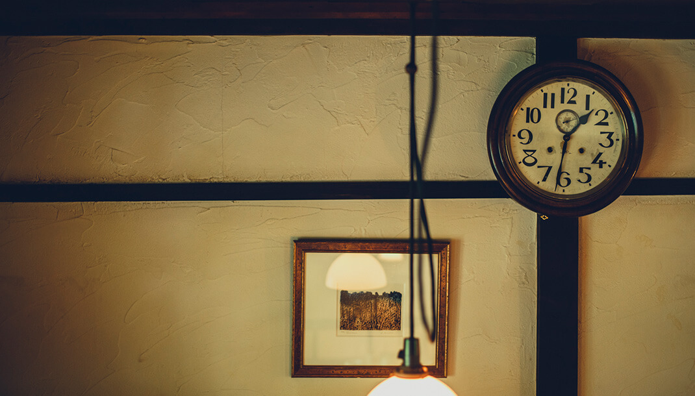
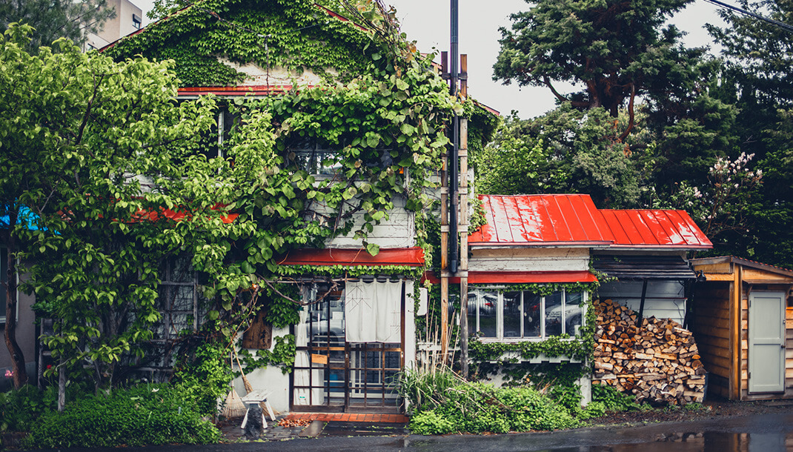

Photo Gallery
珈琲専科 森彦（MORIHICO.）本店とは
1996年創業、円山公園近くの住宅街に佇む古民家カフェの先駆け。昭和27年（1952年）築の木造家屋をオーナー・市川さん自らが足かけ3年かけてリノベーションした聖地的カフェです。現在はMORIHICO.ブランドとして札幌・旭川に14店舗を展開するコーヒーカンパニーの原点でもあります。
「知らなければ辿り着けない」路地裏の隠れ家でありながら、全国からコーヒー好きが訪れる名店。店内は吹き抜けの天井と木のぬくもりに溢れ、アンティーク家具と趣のある調度品が「飴色の空間」を演出しています。
実食レビュー
訪問のコツ・MORIHICO.の楽しみ方
💡 本店ならではの体験
「森の雫」を注文すると、1階から2階へ珈琲の香りが立ち昇ります。この「待つ時間」もまた格別な体験。焦らず、空間を楽しむのが森彦流。
- 週末は開店前から行列あり。平日午後（14〜16時）が比較的空いているのでおすすめ。
- ケーキセット（コーヒー＋ケーキ）は単品より100円お得。ガトーフロマージュとの組み合わせが鉄板。
- 1階カウンターでコーヒー豆・リキッドコーヒー・焼き菓子の購入可能。お土産に最適。
- MORIHICO.は各店コンセプトが異なる。本店を起点に「森彦めぐり」も人気（14店舗）。
- 2号店「アトリエ・モリヒコ」はモーニングが充実（8:00〜）。本店の隠れ家感と使い分けを。